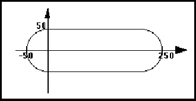

schematicBusSlice ::= '(' 'schematicBusSlice'
interconnectNameDef
signalGroupRef
schematicInterconnectHeader
schematicBusJoined
{ comment | <schematicBusDetails> | schematicBusSlice |
<schematicInterconnectAttributeDisplay> | userData }
')'
*schematicBus *schematicBusSlice *schematicSubBus
A schematicBusSlice is used to define part of a schematicBus that has a width less than the width of the immediately-enclosing schematicBus, schematicBusSlice or schematicSubBus. A schematicBusSlice may be further subdivided into schematicBusSlices and schematicSubBusses.
It is possible to describe certain bus situations in two ways: as two separate busses associated with a ripper, or as a bus with a slice, with or without a ripper to associate the slice with its parent bus. The bus-slice mechanism should be used where the name of both busses in the original system is the same across the ripper, and where the signals on one side of a ripper are a contiguous subsequence of the signals on the other. This is reflected by the signalGroup referenced by the bus slice being a member of the signalGroup referenced by the enclosing bus or bus slice.
(signalGroup A0_1
(signalList (signalRef A0) (signalRef A1)))
(signalGroup A2_3
(signalList (signalRef A2) (signalRef A3)))
(signalGroup A
(signalList (signalRef A0_1) (signalRef A2_3)))
...
(schematicBus BUS_A
(signalGroupRef A)
(schematicInterconnectHeader ...)
(schematicBusJoined ...)
(schematicBusSlice A1
(signalGroupRef A0_1)
(schematicInterconnectHeader ...)
(schematicBusJoined ...)
(schematicBusDetails
(schematicBusGraphics
(figure BUS_GRAPHICS
(path
(pointList (pt 100 200)
(pt 300 200)))))))
(schematicBusSlice A2
(signalGroupRef A2_3)
(schematicInterconnectHeader ...)
(schematicBusJoined ...) ...)
...)
In this example, the schematicBus BUS_A is subdivided into two schematicBusSlices A1 and A2. Each of these has two signals from the four-bit-wide schematicBus. In this case, there is no overlap between these signals, but there could be one or more signals common to the schematicBusSlices. SchematicBusSlice A1 is implemented with a line from (pt 100 200) to (pt 300 200).
schematicComplexFigure ::= '(' 'schematicComplexFigure'
schematicFigureMacroRef
transform
{ propertyDisplayOverride | propertyOverride }
')'
*pageBorderTemplate *pageCommentGraphics *pageTitleBlockTemplate *schematicBusGraphics *schematicFigureMacro *schematicForFrameBorderTemplate *schematicGlobalPortTemplate *schematicIfFrameBorderTemplate *schematicInterconnectTerminatorTemplate *schematicJunctionTemplate *schematicMasterPortTemplate *schematicNetGraphics *schematicOffPageConnectorTemplate *schematicOnPageConnectorTemplate *schematicOtherwiseFrameBorderTemplate *schematicRipperTemplate *schematicSymbol *schematicSymbolBorderTemplate *schematicSymbolPortTemplate
SchematicComplexFigure is used to reference and position a schematicFigureMacro. This allows figures containing graphical entities to be defined once and used many times. The association between the figureGroup and the graphics is made in the schematicFigureMacro. ComplexGeometry is provided to associate graphics with a figureGroup at the time of instantiation.
(schematicComplexFigure (schematicFigureMacroRef BULLET) (transform (origin (pt 200 300))))
In this example, a schematicFigureMacro named BULLET is positioned at (pt 200 300).
schematicFigureMacro ::= '(' 'schematicFigureMacro'
libraryObjectNameDef
schematicTemplateHeader
{ annotate | comment | commentGraphics | figure | propertyDisplay |
schematicComplexFigure | userData }
')'
SchematicFigureMacro allows figures and annotation text to be defined for use in many places. A schematicFigureMacro may make use of previously-defined schematicFigureMacros.
(schematicFigureMacro BULLET
(schematicTemplateHeader ...)
(figure GRAPHICS
(shape
(curve
(arc (pt 0 -50) (numberPoint -50 0) (pt 0 50))
(arc (pt 200 50) (numberPoint 250 0)
(pt 200 -50))))))
This example shows the definition of a bullet shape, as shown below.

schematicFigureMacroRef ::= '(' 'schematicFigureMacroRef'
libraryObjectNameRef
[ libraryRef ]
')'
SchematicFigureMacroRef references a previously-defined schematicFigureMacro.
(schematicFigureMacroRef BULLET)
schematicForFrameBorder ::= '(' 'schematicForFrameBorder'
schematicForFrameBorderTemplateRef
transform
{ <forFrameIndexDisplay> | propertyDisplayOverride | propertyOverride |
<repetitionCountDisplay> }
')'
<schematicForFrameImplementationHeader
forFrame schematicForFrameBorderTemplate schematicForFrameImplementation schematicIfFrameBorder schematicOtherwiseFrameBorder
Describes the border on a schematicForFrameImplementation.
(schematicForFrameBorder
(schematicForFrameBorderTemplateRef
FOR_FRAME_BORDER)
(transform (origin (pt 100 300))
(scaleX 3 1) (scaleY 2 1)))
In this example, a border template FOR_FRAME_BORDER is positioned at 100, 300 and scaled.
schematicForFrameBorderTemplate ::= '(' 'schematicForFrameBorderTemplate'
libraryObjectNameDef
schematicTemplateHeader
usableArea
{ annotate | commentGraphics | figure | <forFrameIndexDisplay> |
propertyDisplay | <repetitionCountDisplay> | schematicComplexFigure }
')'
forFrame schematicForFrameBorder schematicForFrameBorderTemplateRef schematicIfFrameBorderTemplate schematicOtherwiseFrameBorderTemplate
SchematicForFrameBorderTemplate defines a template for the border of a schematicForFrameImplementation.
(schematicForFrameBorderTemplate
FOR_FRAME_BORDER
(schematicTemplateHeader ...)
(usableArea (rectangle (pt 0 0) (pt 1000 1000)))
(figure GRAPHICS
(rectangle (pt 0 -100) (pt 1000 1000))
(path (pointList (pt 0 0) (pt 1000 0))))
...)
This example defines a rectangular border with a lower section outside the usable area for display of the for frame parameters.
schematicForFrameBorderTemplateRef ::= '(' 'schematicForFrameBorderTemplateRef'
libraryObjectNameRef
[ libraryRef ]
')'
forFrame forFrameRef frameRef schematicForFrameBorderTemplate schematicIfFrameBorderTemplateRef schematicOtherwiseFrameBorderTemplateRef
SchematicForFrameBorderTemplateRef references a schematicForFrameBorderTemplate.
(schematicForFrameBorder
(schematicForFrameBorderTemplateRef
FOR_FRAME_BORDER)
...)
schematicForFrameImplementation ::= '(' 'schematicForFrameImplementation'
implementationNameDef
forFrameRef
schematicForFrameImplementationHeader
schematicFrameImplementationDetails
')'
*page *schematicFrameImplementationDetails
forFrame schematicForFrameBorder schematicIfFrameImplementation schematicImplementation schematicOtherwiseFrameImplementation
Names and defines the graphical implementation of a forFrame on a page. There must be at most one implementation for each forFrame in a schematic view.
(schematicForFrameImplementation forF1
(forFrameRef F1)
(schematicForFrameImplementationHeader
(schematicForFrameBorder
(schematicForFrameBorderTemplateRef ...)
(transform ...)))
(schematicFrameImplementationDetails ...))
schematicForFrameImplementationHeader ::= '('
'schematicForFrameImplementationHeader'
{ <schematicForFrameBorder> }
')'
!schematicForFrameImplementation
forFrame schematicIfFrameImplementationHeader schematicImplementation schematicOtherwiseFrameImplementationHeader
This construct gathers together information relating to the for frame implementation as a whole. See schematicForFrameImplementation for an example of its use.
schematicFrameImplementationDetails ::= '(' 'schematicFrameImplementationDetails'
{ cellPropertyDisplay | clusterPropertyDisplay | comment |
commentGraphics | propertyDisplay | schematicBus |
schematicForFrameImplementation | schematicGlobalPortImplementation |
schematicIfFrameImplementation | schematicInstanceImplementation |
schematicMasterPortImplementation | schematicNet |
schematicOffPageConnectorImplementation |
schematicOnPageConnectorImplementation |
schematicOtherwiseFrameImplementation | schematicRipperImplementation |
userData | viewPropertyDisplay }
')'
!schematicForFrameImplementation !schematicIfFrameImplementation !schematicOtherwiseFrameImplementation
SchematicFrameImplementationDetails specifies the details of the implementation of forFrames, ifFrames and otherwiseFrames. Nested frame implementations must correspond with nested frames within logicalConnectivity.
Any schematicInstanceImplementation or schematicRipperImplementation must correspond with an item defined inside the frame, and any schematicNet or schematicBus must likewise refer to signals and signalGroups within the frame.
(logicalConnectivity
(forFrame F1 (repetitionCount 32)
(forFrameIndex I (indexStart 1) (indexStep 1))
(logicalConnectivity
(instance I1 ...)
(instance I2 ...)
(signal S1 ...)
...
(signalGroup SG1 ...) ...))
...)
...
(page ...
(schematicForFrameImplementation F1_IMP
(forFrameRef F1)
(schematicForFrameImplementationHeader ...)
(schematicFrameImplementationDetails
(schematicInstanceImplementation I1 ...)
(schematicInstanceImplementation I2 ...)
(schematicNet N1 (signalRef S1) ...) ...) ...)
...)
This example shows how the implementations of instances and nets refer to instances and signals defined within the forFrame F1.
schematicGlobalPortAttributes ::= '(' 'schematicGlobalPortAttributes'
{ ieeeStandard | <schematicPortAcPower> | <schematicPortAnalog> |
<schematicPortChassisGround> | <schematicPortClock> |
<schematicPortDcPower> | <schematicPortEarthGround> |
<schematicPortGround> | <schematicPortNonLogical> |
<schematicPortOpenCollector> | <schematicPortOpenEmitter> |
<schematicPortPower> | <schematicPortThreeState> }
')'
<globalPort <schematicGlobalPortTemplate
port schematicGlobalPortImplementation schematicPortAttributes
SchematicGlobalPortAttributes describes attributes of a global port or global port template. There is no requirement for the attributes to be accurate or have a coherent usage within the EDIF description. External electrical rule checkers can check declared port types against the correct usage.
The ieeeStandard construct is available for the description of many more global port types. For general component port types it must strictly refer to IEEE Std. 91-1984, Sections 3.1.1 to 3.1.11, 3.3.1 to 3.3.24, 3.3.27 to 3.4.5 and 4.3.2.1 to 4.3.11.1. For boundary scan port types TCK, TMS, TDI, TDO and TRST ieeeStandard must strictly refer to IEEE 1149.1-1990 Sections 3.2 through 3.6 respectively.
There is no implicit connectivity through the use of schematicGlobalPortAttributes. If two global ports have the same schematicGlobalPortAttributes, there is no implicit, unstated connection between the two. Connections are explicitly described in signalJoined and through the use of defaultConnection. There are no semantic rules in EDIF about how the attributes in schematicGlobalPortAttributes are used.
These attributes originate from the schematic domain.
(globalPort VCC
(schematicGlobalPortAttributes
(schematicPortDcPower)))
This may be a global power port on a board containing 7400-series components.
schematicGlobalPortImplementation ::= '(' 'schematicGlobalPortImplementation'
implementationNameDef
schematicGlobalPortTemplateRef
globalPortRef
transform
{ <globalPortNameDisplay> | globalPortPropertyDisplay |
<implementationNameDisplay> | <nameInformation> |
propertyDisplayOverride | propertyOverride }
')'
*page *schematicFrameImplementationDetails
globalPort port schematicGlobalPortAttributes schematicGlobalPortImplementationRef schematicGlobalPortTemplate schematicImplementation schematicMasterPortImplementation schematicSymbolPortImplementation
SchematicGlobalPortImplementation is the implementation of a global port within the context of a schematic page. It references a schematicGlobalPortTemplate, which gives a graphical representation for the global port.
GlobalPortNameDisplay is used in this context to display the name of the globalPort which is referenced by the schematicGlobalPortImplementation.
(globalPort VCCA ...)
...
(library libA
(libraryHeader ...)
(cell cellA ...
(cluster C1 ...
(schematicView view1
(schematicViewHeader ...)
(logicalConnectivity ...
(signal sigVCC
(signalJoined
(globalPortRef VCCA) ... )))
(schematicImplementation
(page &1 ...
(schematicGlobalPortImplementation I1
(schematicGlobalPortTemplateRef ...)
(globalPortRef VCCA)
(transform (origin (pt 100 200))))
(schematicNet VCC
(signalRef sigVCC)
(schematicInterconnectHeader ...)
(schematicNetJoined
(portJoined ...)
(schematicGlobalPortImplementationRef
I1)
...) ...)
...) ...) ...) ...)))
In this example, the schematicGlobalPortImplementation I1 is positioned at (pt 100 200), and is associated with globalPort VCCA. I1 is referenced from schematicNet VCC, and the signal for schematicNet VCC (sigVCC) also references the globalPort VCCA.
schematicGlobalPortImplementationRef ::= '(' 'schematicGlobalPortImplementationRef'
implementationNameRef
')'
*schematicBusJoined *schematicNetJoined
globalPort globalPortRef port portRef schematicGlobalPortImplementation schematicGlobalPortTemplateRef schematicImplementation schematicMasterPortImplementationRef schematicSymbolPortImplementationRef
SchematicGlobalPortImplementationRef is a reference to a schematicGlobalPortImplementation.
(schematicGlobalPortImplementationRef I1)
This example shows a reference to the schematicGlobalPortImplementation whose implementation name is I1.
schematicGlobalPortTemplate ::= '(' 'schematicGlobalPortTemplate'
libraryObjectNameDef
schematicTemplateHeader
hotspot
{ annotate | commentGraphics | figure | <globalPortNameDisplay> |
<implementationNameDisplay> | propertyDisplay | schematicComplexFigure
| <schematicGlobalPortAttributes> }
')'
globalPort port schematicGlobalPortImplementation schematicGlobalPortTemplateRef schematicMasterPortTemplate schematicSymbolPortTemplate
SchematicGlobalPortTemplate is a template definition used by schematicGlobalPortImplementations. It allows a graphical representation of a global port to be defined. It occurs as a library object within a library.
The schematicGlobalPortAttributes construct adds descriptive information to the schematicGlobalPortTemplate. The information specifies what kind of global signal is represented by the template. Such information may be valuable, for example for schematic synthesis packages. EDIF specifies no semantic rules governing how these attributes match actual use.
(schematicGlobalPortTemplate GROUND_SYMBOL
(schematicTemplateHeader
(schematicUnits ...) ...)
(hotspot (pt 0 0))
(figure LINES
(path (pointList (pt 0 0) (pt 0 50)))
(path (pointList (pt -100 0) (pt 100 0)))
(path (pointList (pt -70 -30) (pt 70 -30)))
(path (pointList (pt -40 -60) (pt 40 -60)))
(path (pointList (pt -10 -90) (pt 10 -90)))))
This example shows a schematicGlobalPortTemplate named GROUND_SYMBOL with a hotspot at (pt 0 0) and some graphics to represent a ground symbol, as shown in the figure below.
schematicGlobalPortTemplateRef ::= '(' 'schematicGlobalPortTemplateRef'
libraryObjectNameRef
[ libraryRef ]
')'
!schematicGlobalPortImplementation
globalPort globalPortRef port portRef schematicGlobalPortImplementationRef schematicGlobalPortTemplate schematicMasterPortTemplateRef schematicSymbolPortTemplateRef
SchematicGlobalPortTemplateRef is used to reference a schematicGlobalPortTemplate.
(schematicGlobalPortTemplateRef GROUND_SYMBOL (libraryRef SYSTEM))
schematicIfFrameBorder ::= '(' 'schematicIfFrameBorder'
schematicIfFrameBorderTemplateRef
transform
{ <conditionDisplay> | propertyDisplayOverride | propertyOverride }
')'
<schematicIfFrameImplementationHeader
ifFrame schematicForFrameBorder schematicIfFrameBorderTemplate schematicIfFrameImplementation schematicOtherwiseFrameBorder
Describes the border on a schematicIfFrameImplementation.
(schematicIfFrameBorder
(schematicIfFrameBorderTemplateRef
IF_FRAME_BORDER)
(transform (origin (pt 100 300))
(scaleX 3 1) (scaleY 2 1)))
In this example, a border template IF_FRAME_BORDER is positioned at 100, 300 and scaled.
schematicIfFrameBorderTemplate ::= '(' 'schematicIfFrameBorderTemplate'
libraryObjectNameDef
schematicTemplateHeader
usableArea
{ annotate | commentGraphics | <conditionDisplay> | figure |
propertyDisplay | schematicComplexFigure }
')'
ifFrame schematicForFrameBorderTemplate schematicIfFrameBorder schematicIfFrameBorderTemplateRef schematicOtherwiseFrameBorderTemplate
SchematicIfFrameBorderTemplate defines a template for the border of a schematicIfFrameImplementation.
(schematicIfFrameBorderTemplate
IF_FRAME_BORDER
(schematicTemplateHeader ...)
(usableArea (rectangle (pt 0 0) (pt 1000 1000)))
(figure GRAPHICS
(rectangle (pt 0 -100) (pt 1000 1000))
(path (pointList (pt 0 0) (pt 1000 0))))
...)
This example defines a rectangular border with a lower section outside the usable area for display of the if frame parameters.
schematicIfFrameBorderTemplateRef ::= '(' 'schematicIfFrameBorderTemplateRef'
libraryObjectNameRef
[ libraryRef ]
')'
frameRef ifFrame ifFrameRef schematicForFrameBorderTemplateRef schematicIfFrameBorderTemplate schematicOtherwiseFrameBorderTemplateRef
SchematicIfFrameBorderTemplateRef references a schematicIfFrameBorderTemplate.
(schematicIfFrameBorder
(schematicIfFrameBorderTemplateRef
IF_FRAME_BORDER)
...)
schematicIfFrameImplementation ::= '(' 'schematicIfFrameImplementation'
implementationNameDef
ifFrameRef
schematicIfFrameImplementationHeader
schematicFrameImplementationDetails
')'
*page *schematicFrameImplementationDetails
ifFrame schematicForFrameImplementation schematicIfFrameBorder schematicImplementation schematicOtherwiseFrameImplementation
Names and defines the graphical implementation of an ifFrame on a page. There must be at most one implementation for each ifFrame in a schematic view.
(schematicIfFrameImplementation ifF1
(ifFrameRef ifF1logic)
(schematicIfFrameImplementationHeader
(schematicIfFrameBorder
(schematicIfFrameBorderTemplateRef ...)
(transform ...)))
(schematicFrameImplementationDetails ...))
schematicIfFrameImplementationHeader ::= '(' 'schematicIfFrameImplementationHeader'
{ <schematicIfFrameBorder> }
')'
!schematicIfFrameImplementation
ifFrame schematicForFrameImplementationHeader schematicImplementation schematicOtherwiseFrameImplementationHeader
This construct gathers together information relating to the if frame implementation as a whole. See schematicIfFrameImplementation for an example of its use.
schematicImplementation ::= '(' 'schematicImplementation'
{ page | <totalPages> }
')'
schematicForFrameImplementation schematicForFrameImplementationHeader schematicFrameImplementationDetails schematicGlobalPortImplementation schematicGlobalPortImplementationRef schematicIfFrameImplementation schematicIfFrameImplementationHeader schematicInstanceImplementation schematicInstanceImplementationRef schematicInterconnectTerminatorImplementation schematicInterconnectTerminatorImplementationRef schematicJunctionImplementation schematicJunctionImplementationRef schematicMasterPortImplementation schematicMasterPortImplementationRef schematicOffPageConnectorImplementation schematicOffPageConnectorImplementationRef schematicOnPageConnectorImplementation schematicOnPageConnectorImplementationRef schematicOtherwiseFrameImplementation schematicOtherwiseFrameImplementationHeader schematicRipperImplementation schematicRipperImplementationRef schematicSymbolPortImplementation schematicSymbolPortImplementationRef
SchematicImplementation contains the schematic pages that implement the connectivity.
(schematicImplementation
(totalPages 2)
(page &1 (pageHeader ...)
(schematicMasterPortImplementation MP1 ...)
(schematicNet NET1 ...)
(schematicNet NET2 ...)
...)
(page &2 ...))
This example shows a schematicMasterPortImplementation and two schematic nets defined in page &1.
schematicInstanceImplementation ::= '(' 'schematicInstanceImplementation'
implementationNameDef
instanceRef
schematicSymbolRef
transform
{ <cellNameDisplay> | cellPropertyDisplayOverride |
clusterPropertyDisplayOverride | <designatorDisplay> |
<implementationNameDisplay> | <instanceNameDisplay> |
<instanceNameGeneratorDisplay> | instancePortAttributeDisplay |
instancePropertyDisplay | <instanceWidthDisplay> | <nameInformation> |
pageCommentGraphics | parameterDisplay | propertyDisplayOverride |
propertyOverride | timingDisplay | <viewNameDisplay> }
')'
*page *schematicFrameImplementationDetails
instance schematicImplementation schematicInstanceImplementationRef
SchematicInstanceImplementation is used to position an instance in a page and to modify the display positions of properties and attributes.
In this context, cellNameDisplay is used to display the name of the cell being instanced. InstanceNameDisplay is used to display the name of the instance referenced. ImplementationNameDisplay displays the implementationNameDef.
Within schematicInstanceImplementation, instancePortAttributeDisplay is used to specify the display positions for port attributes and properties.
(schematicInstanceImplementation &123 (instanceRef nand12) (schematicSymbolRef symbol) (transform (origin (pt 100 200))) (designatorDisplay ...) (instancePortAttributeDisplay SPI1 (portRef IN) ...) ...)
schematicInstanceImplementationRef ::= '(' 'schematicInstanceImplementationRef'
implementationNameRef
')'
!schematicSymbolPortImplementationRef
instance instanceRef schematicImplementation schematicInstanceImplementation schematicJunctionImplementationRef schematicRipperImplementationRef
SchematicInstanceImplementationRef references an implementation of an instance on a page.
(schematicSymbolPortImplementationRef IN (schematicInstanceImplementationRef INST1))
schematicInterconnectAttributeDisplay ::= '(' 'schematicInterconnectAttributeDisplay'
{ <connectivityTagGeneratorDisplay> | <criticalityDisplay> |
interconnectAttachedText | interconnectDelayDisplay |
<interconnectNameDisplay> | interconnectPropertyDisplay }
')'
<schematicBus <schematicBusSlice <schematicNet <schematicSubBus <schematicSubNet
SchematicInterconnectAttributeDisplay gathers together all the attribute display constructs for interconnects. Interconnect attributes may be displayed at any level in the interconnect hierarchy of a bus, bus slice, subbus, net or subnet.
The value displayed will be the value for the interconnect which encloses schematicInterconnectAttributeDisplay, or if none is found there, higher up the hierarchy of interconnects.
(schematicBus BUS1 ...
(schematicInterconnectAttributeDisplay
(criticalityDisplay ...)
...) ...)
schematicInterconnectHeader ::= '(' 'schematicInterconnectHeader'
{ <criticality> | documentation | interconnectDelay | <nameInformation>
| property | schematicInterconnectTerminatorImplementation |
schematicJunctionImplementation | <schematicWireStyle> }
')'
!schematicBus !schematicBusSlice !schematicNet
interconnectHeader schematicSubInterconnectHeader
SchematicInterconnectHeader gathers together information relating to the schematic interconnect as a whole. It contains the definitions of all the junctions and terminators used within the interconnect.
(schematicInterconnectHeader (nameInformation (primaryName "BusA0")) (schematicWireStyle (wideWire)) ...)
schematicInterconnectTerminatorImplementation ::= '('
'schematicInterconnectTerminatorImplementation'
implementationNameDef
schematicInterconnectTerminatorTemplateRef
transform
{ <implementationNameDisplay> | <nameInformation> |
propertyDisplayOverride | propertyOverride }
')'
schematicImplementation schematicInterconnectTerminatorImplementationRef schematicInterconnectTerminatorTemplate
SchematicInterconnectTerminatorImplementation represents the graphical implementation of a terminator on a schematic interconnect. This is sometimes referred to as a "dangling end".
(schematicInterconnectTerminatorImplementation
T1
(schematicInterconnectTerminatorTemplateRef
BUS_END)
(transform ...))
schematicInterconnectTerminatorImplementationRef ::= '('
'schematicInterconnectTerminatorImplementationRef'
implementationNameRef
')'
*schematicBusJoined *schematicNetJoined
interconnectRef schematicImplementation schematicInterconnectTerminatorImplementation schematicInterconnectTerminatorTemplateRef
SchematicInterconnectTerminatorImplementationRef references a schematicInterconnectTerminatorImplementation.
(schematicInterconnectTerminatorImplementationRef T1)
schematicInterconnectTerminatorTemplate ::= '('
'schematicInterconnectTerminatorTemplate'
libraryObjectNameDef
schematicTemplateHeader
hotspot
{ commentGraphics | figure | <implementationNameDisplay> |
propertyDisplay | schematicComplexFigure }
')'
schematicInterconnectTerminatorImplementation schematicInterconnectTerminatorTemplateRef
SchematicInterconnectTerminatorTemplate defines a graphical template to be used to represent a floating end of a bus or net in a schematic drawing. It is permitted to have no graphics at all and so represent just a marker for the CAD system.
(schematicInterconnectTerminatorTemplate
BUS_END
(schematicTemplateHeader ...)
(hotspot (pt 0 0)
(schematicWireAffinity (wideWire))))
This example describes a template with no graphical representation.
schematicInterconnectTerminatorTemplateRef ::= '('
'schematicInterconnectTerminatorTemplateRef'
libraryObjectNameRef
[ libraryRef ]
')'
!schematicInterconnectTerminatorImplementation
interconnectRef schematicInterconnectTerminatorImplementationRef schematicInterconnectTerminatorTemplate
SchematicInterconnectTerminatorTemplateRef references a schematicInterconnectTerminatorTemplate.
schematicJunctionImplementation ::= '(' 'schematicJunctionImplementation'
implementationNameDef
schematicJunctionTemplateRef
transform
{ <implementationNameDisplay> | <nameInformation> |
propertyDisplayOverride | propertyOverride }
')'
schematicImplementation schematicJunctionImplementationRef
A schematicJunctionImplementation is used to join two subnets or subbusses belonging to the same schematicNet or schematicBus. It is also known as a solder dot or tie dot in schematics.
SchematicJunctionImplementation references a schematicJunctionTemplate, and may be referenced by a schematicNetJoined or schematicBusJoined. The template is placed graphically on the page using transform.
There must be at least two points within the interconnect that are coincident with each schematicJunctionImplementation.
(schematicJunctionImplementation I1 (schematicJunctionTemplateRef TIE) (transform (origin (pt 100 200))))
This example places the schematicJunctionImplementation with name I1 at (pt 100 200). I1 is an implementation of the schematicJunctionTemplate named TIE.
schematicJunctionImplementationRef ::= '(' 'schematicJunctionImplementationRef'
implementationNameRef
')'
*schematicBusJoined *schematicNetJoined
schematicImplementation schematicInstanceImplementationRef schematicJunctionImplementation schematicJunctionTemplateRef schematicRipperImplementationRef
SchematicJunctionImplementationRef is used to reference a previously-defined schematicJunctionImplementation within the same schematic net, bus or bus slice.
It is used to associate a schematicJunctionImplementation with a schematicNet, schematicBus, schematicSubNet, etc.
(schematicJunctionImplementationRef I1)